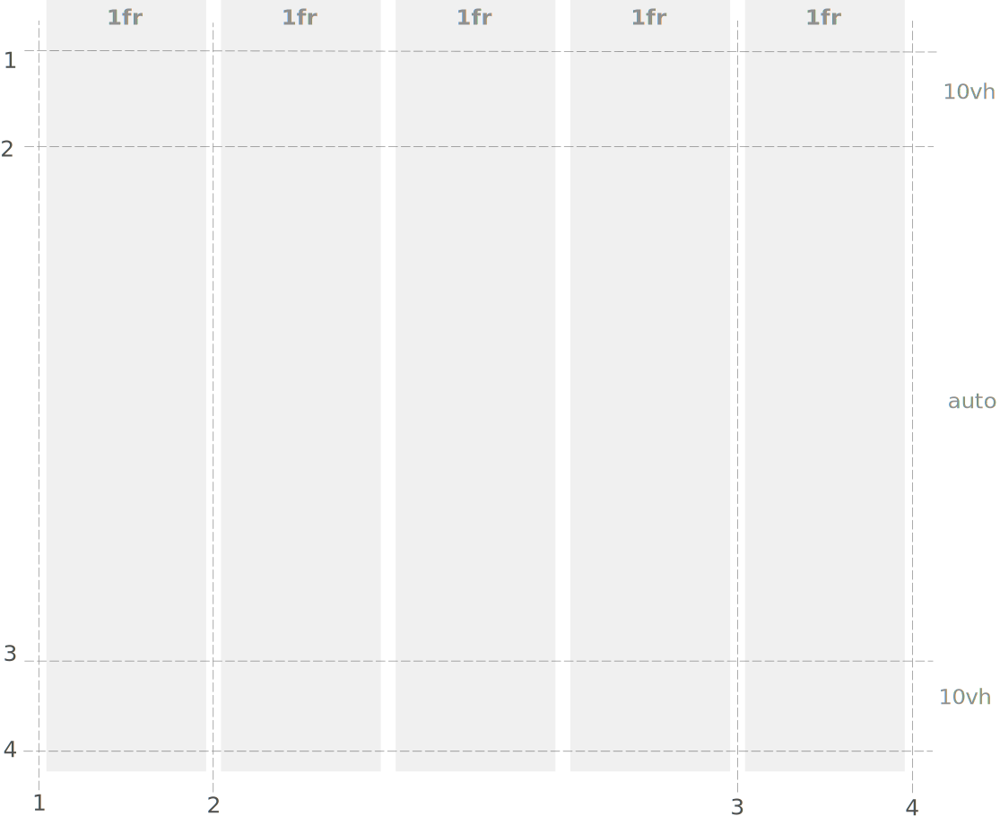
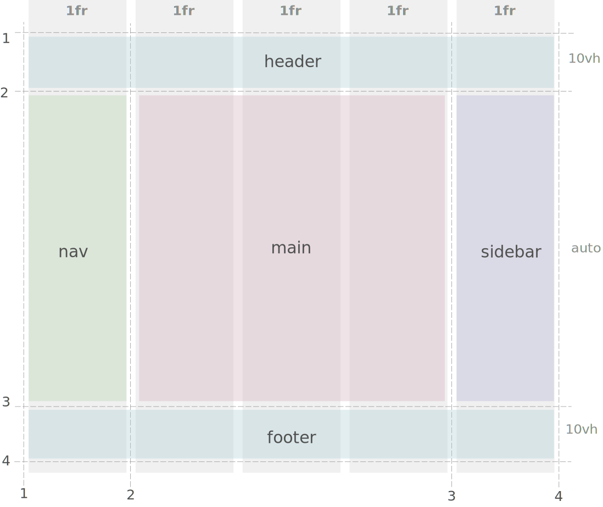
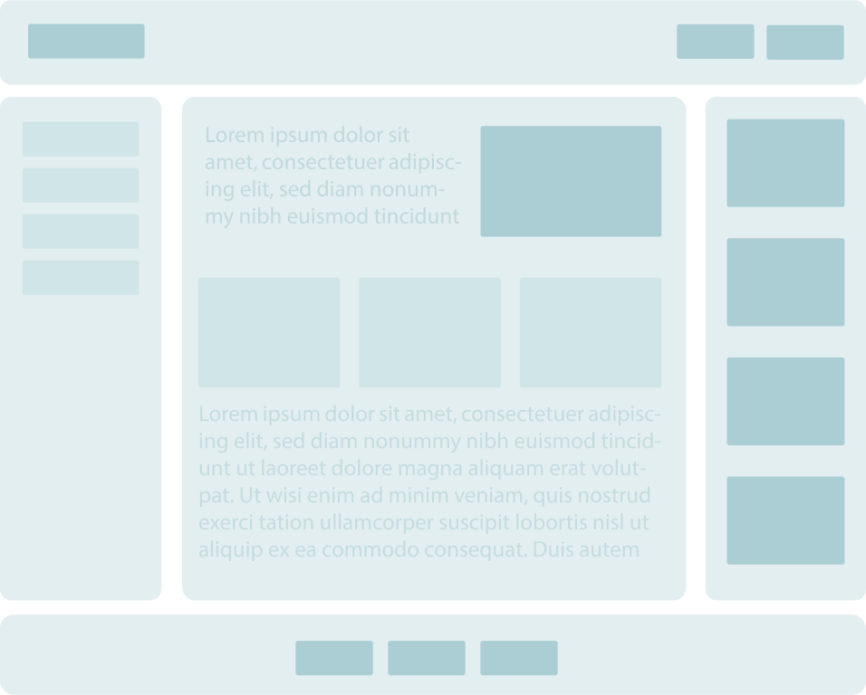

Project Setup
- Before starting to code any web app, it's a good practice to sketch the
layout on paper first.
- For this project, GRID is used to build the larger layout.
FLEX is used build the layout of smaller components.
- GRID and FLEX allow to build web pages that are adaptive with different screen size (desktop / small screens / mobile).
3 columns layout
- For large desktop screens, 3 columns layout is suitable.
- As screen size reduces, so will the numbers of columns.
- This lesson covers 3 columns layout,
2 and 1 column layout in the next module.
grid-container
- First step is setting up the large-scale layout by
defining the grid-container.
- define the
grid-container properties:
grid-template-columns
grid-template-rows
- Use the graph below to guide you set the number of columns/rows and their size.

- Second step is defining the grid areas by setting up the property:
grid-template-areas
- Use the graph below to guide you set different areas.

flex-container
- Each
grid-item has a flex-container
- Flex defines the structure of smaller scale UI components.
- Use the graph below to guide you set the layout of each section on the page.
